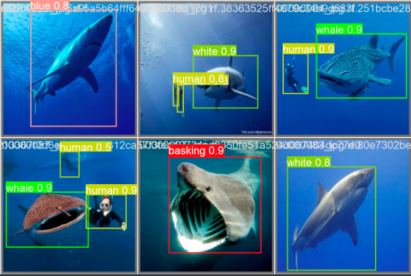

Hello, I'm a dedicated Data Scientist with four years of experience, proficient in unveiling valuable insights from vast data sets. When I'm not mining data or modeling algorithms, you can find me catching a wave surfing, playing beach volleyball, or planning my next adventure - I've explored 35 countries and counting. My love for exploration doesn't stop at traveling; I'm always ready to navigate through data to uncover the unknown. Let's connect and create meaningful solutions together.
About Me
Latest Projects

New
SharkSpot: Real-Time Shark Detection and Classification
In this project, I designed a system that accurately detects and classifies different species of sharks from real-time video feeds using YOLOv8. This involved collecting and annotating my own dataset, contributing to the precision of the model. This solution serves as a significant aid in marine life studies and can potentially mitigate shark-human encounters by providing timely alerts.

BuyerForecaster: Machine Learning for E-Commerce
BuyerForecaster" is a project aimed at predicting an online shopper's buying intent. Leveraging a dataset from UCI Machine Learning Repository, it examines numerous shopper characteristics and behaviors from their browsing sessions. The goal is to accurately predict if a shopper will make a purchase, offering businesses valuable insights for enhancing their customer targeting and conversion rates.
BullPrice: Intelligent Bulldozer Pricing Forecast
The BullPrice project aims to predict the future sale price of bulldozers using their characteristics and historical sales data. Utilizing data from the Kaggle Bluebook for Bulldozers competition, the project applies machine learning techniques to forecast prices accurately. The performance of our predictions is evaluated using the Root Mean Squared Log Error (RMSLE) between the actual and predicted auction prices, enabling us to continuously refine the model for better precision.
Work Experience
Data Scientist- Asensus Surgical (2022 - Present)
At Asensus Surgical, I lead data-driven projects and guide a team to leverage data for impactful solutions. We design, develop, and deploy machine learning and deep learning models using a variety of tools including Python, pandas, Scikit-learn, TensorFlow, and PyTorch. I also specialize in utilizing Google Cloud Platform for creating scalable, cloud-based applications, and comprehensive analytical systems. These efforts drive significant business improvements across various operational aspects.
Data Scientist Instructor - Openclassrooms (2021 - Present)
Alongside my primary role, I also serve as a Data Science Instructor for Openclassrooms, Europe's leading online educational platform. In this capacity, I mentor students on core subjects including Data Science, Machine Learning, Statistics, Python, and SQL, facilitating their journey to becoming proficient data professionals. It's a role that combines my passion for data with the joy of empowering others through education.
Data Scientist (short term contract) - IBM (2020)
During my tenure at IBM, under a short-term contract, I was entrusted with handling massive datasets to generate critical statistics for insurance companies. My role entailed leveraging Python and SQL to implement effective machine learning solutions. This experience honed my ability to manage large data and derive meaningful insights for industry-specific applications.
Data Scientist Intern - Compit (2019-2020)
As a Data Scientist intern at Compit, I not only developed predictive analytics and clustering models using Python, pandas, and Scikit-learn, but also deployed these models into production. Leveraging Spark for big data and AWS for cloud solutions, I was pivotal in driving data-driven decisions and operationalizing machine learning models.
My GitHub
GitHub Calendar widget.
You can also embed your GitHub activities using Casey Scarborough's GitHub Activity Stream widget.
-->